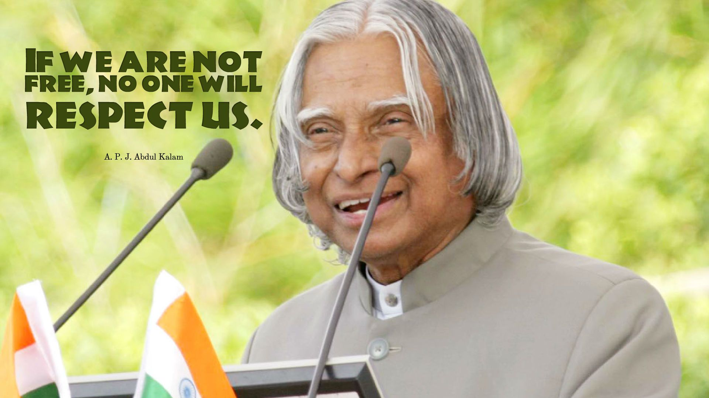
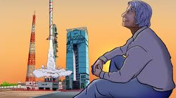
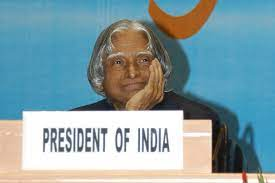

History
To see a Articel Please Visit this Site

Greats are not born every day; they are born once in a century and are remembered for millennials to come. One such great, Dr. APJ Abdul Kalam, was born in Rameswaram of Madras Presidency on 15th October 1931 to a poor Tamil Muslim family. He lived with his family in the temple city of Tamilnadu, Rameswaram, where his father, Jainulabdeen, had a boat and was an imam of a local mosque. At the same time, his mother, Ashiamma, was a housewife. Kalam had four brothers and one sister in his family, from which he was the youngest. Kalam's ancestors were wealthy traders and landowners and had vast land and property tracts. But with time, their business of ferrying pilgrims and trading groceries suffered huge losses due to the Pamban Bridge's opening. As a result, Kalam's family had become inadequate and struggled hard to make a living. At a tender age, Kalam had to sell newspapers to supplement his family income.
Education
Although Kalam had average grades in school, he was very hard working and had an immense desire to learn. He spent a lot of time studying and had developed a particular interest in mathematics. Kalam left Schwartz higher secondary school after completing his early education and went to Saint Joseph's College, Tiruchirapalli. From Saint Joseph's College, he graduated in physics in 1954. He moved to Madras in 1955 to study aerospace engineering at Madras Institute of Technology.
Kalam As a Scientist

Kalam joined as a scientist in the aeronautical development establishment of DRDO in 1960, after graduation. His career started with him designing a small hovercraft. However, he was not convinced by his choice of a job at the DRDO. Kalam was transferred to ISRO in 1969, where he was the project director of India's first satellite vehicle launch. The satellite vehicle deployed the Rohini satellite successfully in near-Earth orbit in July 1980. Kalam received the Government's LV and Slv projects between the 1970s-90s. He directed two projects like Project Devil and Project Valiant, which aimed at developing ballistic missiles from the successful SLV program's technology Kalam somehow convinced Indira Gandhi and sought secret funds for these aerospace projects. His research and immense knowledge brought him and the nation great laurels in the 1980s.
Kalam then went on to become the scientific advisor of the defence minister in 1992 and served at the same post for five years before getting promoted to the post of principal scientific advisor to the government. His immense role in the country's 1998 nuclear weapons tests solidified India as a nuclear power. Kamal had now become a national hero, to be remembered for ages to come. However, the tests he conducted caused a huge uproar in the international community. Kamal put forward a nationwide plan called Technology Vision 2020, which according to him, was a fantastic way for transforming the stature of India in 20 years, taking it from a developing to a developed nation. The plan envisioned the progress of the nation by adopting advanced technology, expanding healthcare facilities, and emphasizing the education of the masses.
Kalam as a President

Sir Kalam was entitled to be the 11th president of India. His term period of 25th July 2002 to 25th July 2007 was achieved by winning a presidential election in 2002 with a massive margin of votes. National Democratic Alliances’ nominated him to be president and it was supported by Samajwadi Party and National Congress Party. He was lovingly called as peoples’ president as he had done uncountable works for the welfare of the people and through the entire country.
He was brave and courageous enough to take decisions and implement them no matter if that was tough or sensitive or highly controversial. The “office of profit” is perhaps the hard Act that he had to sign. The “office of profit”, according to the English Act of Settlement in 1701 explains that no single individual who has a professional set up under the royal family, who has some kind of provision with or who is taking a pension from the prince has the right to work for the of the “House of Commons”. This will allow the royal family to have zero influence on the administrative conditions.
He had also become one of the most talked-about presidents Rule in 2005 for imposing the Presidents’ rule in Bihar. Kalam expressed his wish to take up the position one more time but then later changed his mind.
After taking farewell from the office, he shifted and commenced his career as a visiting professor at the Indian Institute of Management in Shillong. He served as an Aerospace Engineering professor at Anna University, Tamil Nadu. He also lit up educational institutions like the Indian Institute of Indore, Indian Institute of Bangalore with his presence and knowledge. Sir Kalam served as chancellor Indian Institute of Space Science and Technology, Thiruvananthapuram.
In 2012, he introduced a program called “What Can I Give?” focusing on the theme of eradicating corruption from the country.
Achivements
Abdul Kalam was a person of a golden heart who has received ample awards and achieved many things during his life journey. In 1981 Abdul Kalam received the prestigious Padma Bhushan award. In 1990 he received the Padma Bhushan award. The renowned personality, because of his tremendous effort towards the nation, received the Bharat Ratna in 1997. In the same year, he was awarded the Indira Gandhi Award for National Integration. The government of India awarded Kalam with the Veer Savarkar award in 1998. Because of his contribution to arts, science, and technology, he received the SASTRA Ramanujan prize in 2000. Finally, in the year 2013, the eminent personality was bestowed with the Von Braun Award by the National Space Society.
Although the life of Abdul Kalam was filled with struggles and hardships, he rose above the adversaries to become one of the greatest scientists of modern India. His role in nation-building will be remembered till posterity
- In 1981, Dr. Kalam received Padma Bhushan from the Government of India.
- In 1990, Dr. Kalam received Padma Vibhushan from the Government of India.
- In 1994 and 1995, Distinguished Fellow and Honorary Fellow by Institute of Directors India and National Academy of Medical Sciences.
- In 1997, he had received Bharat Ratna from Government of India and Indira Gandhi Award for National Integration from the Indian National Congress.
- In 2009, The California Institute of Technology, U.S.A, presented Kalam with the International von Karman Wings Award, Hoover Medal by ASME Foundation, USA and Honorary Doctorate by Oakland University.
- In 2008, he won the Hoover Medal given by ASME Foundation, USA and received a Doctor of Engineering from Nanyang Technological University, Singapore.
Articles
As we know that Dr. Abdul Kalam was the youngest child in his family and was close to his parents and his brothers and sisters. He never married and served his relatives' whole life. No doubt he was a very simple person with a simple lifestyle. He owned a few possessions including veena and a collection of books. He was a kind-hearted man, a vegetarian and consumed simple food.